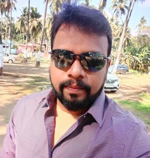

|  |
Rajasekhar Palli SAFe Agilist & CSM mylinkedinprofile |
| Date | Company |
|---|---|
| 2004-2005 | Worked at Infosys |
| 2006-2014 | worked at ADP |
India Hyderabad Telegana 500015
I am Rajasekhar Palli a dynamic professional with more than 15+ years experience into Information Technology and business visionary with hands-on experience in aligning business needs with the solutions, Project Management experience leading large, complex cross-functional, data driven, improvement projects /programs. My exposure includes more into Project Management/Scrum Master/Business Analyst/. Worked on different domain like CRM, Banking, Insurance, Retails, Mobile application and Health care, Pre-Sales. I have numerous contributions to my present employee that has benefited the bottom line. The value add that I have brought in the organization like implementation of new Agile process, Continuous Integration and implementation of the latest development process like Agile-Scrum/ Kanban etc to deliver early shippable product to benefit the business of the customer. These accomplishments have been derived from my exceptional interpersonal & communication skill, strong attention to details and unparalleled work ethic. With my rich and versatile experience, I can bring your organization to include a practical approach to develop with a constant eye for successful delivery of the product within the triple constraint of scope, schedule and cost without diminishing quality. Currently associated with HCL Pvt Ltd as a Technical Manager, previously worked with companies Capgemini, CocoSoft, ADP Pvt Ltd, Arsin Systems Pvt Ltd and Infosys. I would like to bring forth the completion of Maters in Business Administration from Gitam University Vishakapatnam, AP and Bachelor of Technology from Sri Venkateshwara University, Tirupathi, A.P., PMP (35 PDU’s completed), and Certified CSM. Areas of expertise: Agile Principals, Agile Coach, Scrum, Scrum-Tasking Meetings/Retrospectives, -Communication, -Relative Estimation, -Project Management, - Story-Based Development, -Iteration/Sprint, - Planning Meetings and Conflict Resolution, knowledge of Kanban and XP Technical Forte: VB/HTML/CSS/JavaScript/ABAP/ReactJS/SQL server/Devops Aspirations: Sr.Manager/AVP I assure, given an opportunity would meet the exceptional to bring in my experience to better make the product and the process and be an asset to the company.
| HTML | ***** | Web Development | **** |
| CSS | *** | ||
| JavaScript | ** |